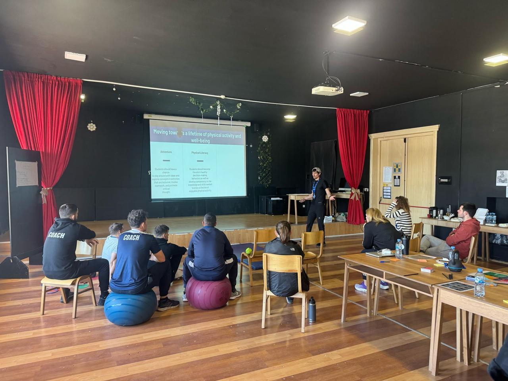

Story
Work that moves between whiteboards, workshops, and wild air.
The V6 website is built like a visual essay: each section holds a
different texture of Mihai's work, from thoughtful instruction to
collaborative facilitation and recovery through nature.

Teaching
Clear thinking made visible
Lessons, frameworks, and questions are treated as shared
surfaces for discovery rather than one-way delivery.

Facilitation
Room energy that becomes momentum
Group work is framed cinematically here: voices, bodies, and
ideas converging into a practical next step.